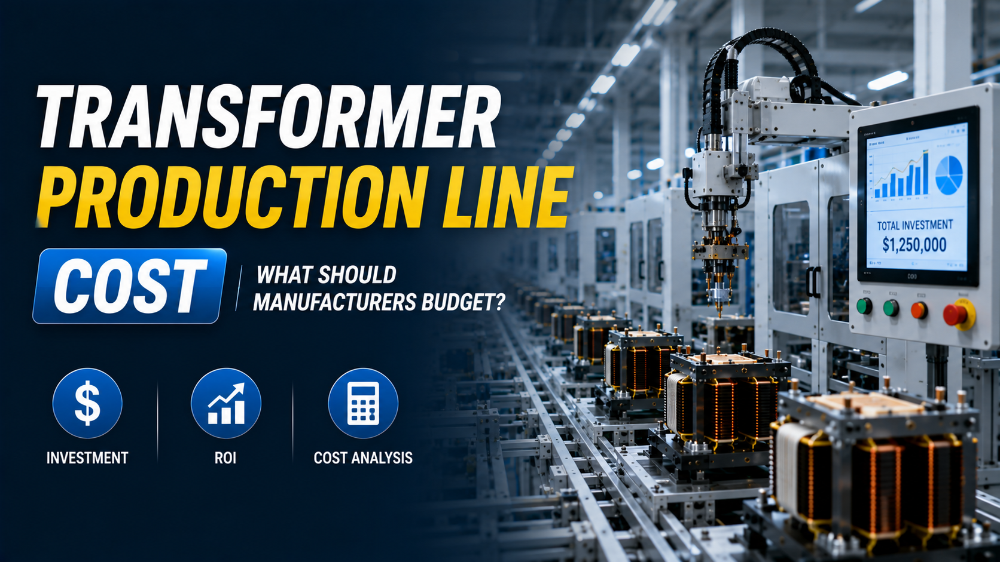

Transformer Production Line Cost: What Should Manufacturers Budget?

Summary
Investing in a transformer production line is a strategic decision that directly affects manufacturing capacity, product quality, operating costs, and long-term competitiveness. Whether you are launching a new factory or expanding an existing production facility, understanding what drives project cost is essential for making informed investment decisions.
Rather than focusing solely on equipment prices, manufacturers should evaluate the total investment required for factory layout, automation level, production capacity, quality systems, digital manufacturing, and future scalability. This guide explains the major cost factors behind a modern high-frequency transformer production line and provides a practical framework for planning your manufacturing budget.
Technology
- High Frequency Transformer Production Line
- Factory Automation
- Multi-Axis Winding Machine
- Automatic Assembly
- Electrical Testing
- AOI Vision Inspection
- MES Integration
- Smart Factory
- Industrial Automation
- ASRS Warehouse Integration
- Conveyor Automation
- Digital Manufacturing
Challenge
Many manufacturers begin planning a new production line by asking one question:
"How much does a transformer production line cost?"
However, this question rarely has a single answer.
The investment required depends on many variables, including:
Annual production volume
Product types and specifications
Target markets
Required automation level
Factory layout
Quality standards
Digital manufacturing requirements
Future expansion plans
Focusing only on equipment price often leads to underinvestment in critical systems or unnecessary spending on features that do not support business objectives.
Solution
Successful manufacturers evaluate total project value rather than simply comparing machine quotations.
A modern transformer production line should be planned as a complete manufacturing system, balancing capital investment with long-term operating efficiency.
Budget planning typically includes production equipment, material handling, testing systems, factory utilities, software integration, installation, training, and future scalability.
When these elements are considered together, manufacturers can achieve lower operating costs, higher productivity, and stronger long-term return on investment.
Workflow & Layout
Project Planning
↓
Production Capacity Analysis
↓
Factory Layout Design
↓
Equipment Selection
↓
Automation Level Definition
↓
Utility & Infrastructure Planning
↓
Digital System Integration
↓
Installation & Commissioning
↓
Trial Production
↓
Mass Production
↓
Continuous Optimization
Budget planning should begin long before equipment procurement to ensure every investment supports future production goals.
Results & ROI
- Manufacturers that develop a comprehensive investment strategy typically achieve:
- Business Objective Benefit
- Better Capital Allocation Avoid unnecessary equipment purchases
- Faster Project Launch Clear implementation roadmap
- Lower Operating Costs Through optimized automation
- Higher Productivity Balanced production workflow
- Improved Product Quality Standardized manufacturing processes
- Easier Capacity Expansion Modular factory design
- Better Cash Flow Planning Phased investment options
- Stronger Long-Term ROI Higher manufacturing efficiency
- The most successful factories optimize lifetime operating costs rather than minimizing initial investment.
Equipment List
- A complete transformer production line budget may include:
- 📌 Core Manufacturing Equipment：
- Multi-Axis Automatic Winding Machines
- Wire Processing Equipment
- Core Assembly Stations
- Automatic Soldering Systems
- Glue Dispensing Equipment
- 📌 Quality Control：
- Electrical Testing Systems
- AOI Vision Inspection
- Functional Testing Equipment
- 📌 Material Handling：
- Conveyor Systems
- Automatic Material Feeding
- Buffer Storage
- 📌 Digital Manufacturing：
- MES System
- ERP Integration
- Production Data Collection
- Barcode & Traceability System
- 📌 Logistics (Optional)：
- ASRS Warehouse
- AGV / AMR Material Transport
- Automatic Packaging System
Project Overview / Opening
Building a modern transformer factory requires more than purchasing production equipment.
Today's manufacturers must consider production flexibility, labor efficiency, digital manufacturing, quality management, and future scalability from the very beginning of the project.
Factories designed around integrated automation often achieve lower operating costs, better production consistency, and greater competitiveness than facilities built through incremental equipment purchases.
Understanding how investment decisions influence long-term manufacturing performance helps manufacturers maximize the value of every dollar invested.
Key Points
- Equipment price represents only one part of total project investment.
- Automation level significantly affects both capital expenditure and operating costs.
- Factory layout influences productivity and material flow.
- Digital manufacturing systems improve operational efficiency and quality management.
- Scalable production planning reduces future expansion costs.
- Quality inspection systems protect long-term product reliability.
- ROI depends on lifetime manufacturing performance rather than initial equipment cost.
- Early project planning minimizes implementation risks.
Implementation / Workflow
An effective investment plan begins with defining production targets, product portfolio, and long-term business objectives.
Engineers then analyze factory space, production flow, labor requirements, and quality standards before selecting appropriate automation equipment.
Once the production workflow has been established, supporting systems such as conveyors, testing equipment, MES software, warehouse automation, and quality traceability can be integrated into a unified manufacturing platform.
By planning the project holistically rather than purchasing equipment independently, manufacturers reduce implementation risk while creating a production system capable of supporting future business growth.
Customer Value / Results
Careful budget planning delivers measurable long-term advantages:
Better return on capital investment
Lower manufacturing cost per transformer
Reduced labor dependency
Stable product quality
Faster production ramp-up
Improved production visibility through digital management
Easier expansion as market demand grows
Reduced project implementation risk
Greater confidence when serving international OEM customers
Rather than asking "What is the cheapest production line?", leading manufacturers ask "Which investment creates the greatest business value over the next ten years?"
Conclusion / Next Step
The cost of a transformer production line is determined by much more than the price of individual machines. Production capacity, automation level, factory layout, digital systems, quality requirements, and future expansion all play critical roles in the overall investment. Manufacturers that plan strategically can achieve lower operating costs, higher production efficiency, and stronger long-term returns while building a factory ready for future market demands.
We help manufacturers worldwide design, source, integrate, and deliver industrial automation projects by leveraging China's manufacturing ecosystem. From feasibility studies and factory layout planning to equipment sourcing, system integration, MES implementation, and smart warehouse solutions, we provide complete support throughout every stage of your project.
If you are budgeting for a new transformer production line or evaluating the modernization of an existing factory, visit our Contact page to submit your project requirements. We can prepare a customized production line proposal, conceptual factory layout, and budget estimate based on your products, production targets, automation requirements, and long-term investment strategy.
SEO Title
Transformer Production Line Cost: What Should Manufacturers Budget?
SEO Description
Investing in a transformer production line is a strategic decision that directly affects manufacturing capacity, product quality, operating costs, and long-term competitiveness. Whether you are launching a new factory or expanding an existing production facility, understanding what drives project cost is essential for making informed investment decisions.
Rather than focusing solely on equipment prices, manufacturers should evaluate the total investment required for factory layout, automation level, production capacity, quality systems, digital manufacturing, and future scalability. This guide explains the major cost factors behind a modern high-frequency transformer production line and provides a practical framework for planning your manufacturing budget.
Related Blog
Start with Your Business Challenge
Tell us about your warehouse, factory, or production requirements. We'll help you explore practical automation solutions and relevant project references.